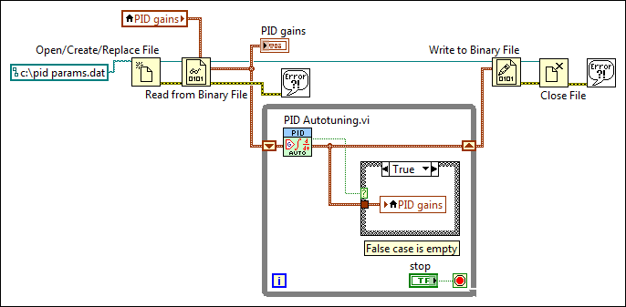

The PID autotuning VIs, including PID Autotuning, PID Advanced Autotuning, and PID Online Autotuning, update the parameters of a PID controller and return updated PID gains values for the next iteration of the control application. To ensure that the correct PID gains values are available each time you run your control application, you must either save the VI you are using to implement the application each time it runs, or use a datalog file to save the PID gains.
The following block diagram shows a VI that uses the File I/O VIs and functions to create a datalog file and save the latest value of the PID gains out output of the PID Autotuning VI to the file.

Before the control loop begins, the Open/Create/Replace File function opens a datalog file, and the Read from Binary File function reads the file to obtain the PID gains parameters. When the autotuning procedure runs, a local variable updates the PID gains control. After the control loop is complete, the Write to Binary File function writes the current PID gains cluster to the datalog file and saves the file. This ensures that each time the control application runs, the PID Autotuning VI uses updated parameters.